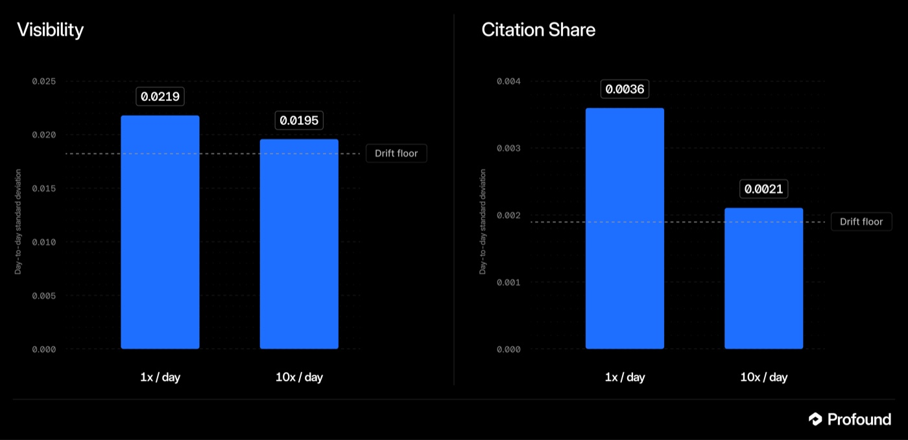

Executive Summary
AI가 답을 지을 때 어떤 브랜드를 불러 주는지 재서 파는 회사가 9월 15일 시리즈 D를 발표했다. 뉴욕에 있는 프로파운드(Profound)이고, 조달액은 1억 8,000만 달러, 기업가치는 18억 달러다. 세쿼이아 캐피털과 클라이너 퍼킨스가 공동으로 이끌었다. 이 글은 그 값이 무엇에 매겨진 것인지, 그리고 그 대상을 재는 눈금이 지금 어떤 상태인지를 본다.
직전 라운드와 견주면 속도가 드러난다. 2월 24일 시리즈 C 때 이 회사의 값은 10억 달러였다. 일곱 달이 채 안 되는 사이 1.8배가 됐고, 그사이 엔터프라이즈 고객은 700곳에서 1,000곳을 넘겼다. 그런데 지난 5월에 공개된 한 감사는 이 산업이 파는 지표의 재현성이 같은 문장을 다시 돌렸을 때보다도 낮다고 보고한다. 같은 뜻을 조금 달리 묻기만 해도 추천 명단이 거의 갈린다는 것이다.
흥미로운 것은 지목당한 회사의 대답이다. 프로파운드는 논문이 나온 뒤 자사 리서치 블로그에 측정 설계를 설명하는 글을 올렸는데, 거기서 수치를 흔드는 힘 가운데 하나로 표현 민감도를 직접 꼽고 표현이 모델의 검색을 좌우한다고 적는다. 감사 논문이 지목한 것과 같은 사슬이다. 4절까지는 회사의 라운드별 발표문과 리서치 글, 그리고 그 감사 논문에 적힌 것을 따라간다. 5절에서 데이터 실무로 옮겨 적는 부분은 그 문서들에 없는 이 글의 해석이다.
주요 수치
출처: 프로파운드 발표문 (2026-09-15) · Unusual 감사 논문 (arXiv, 2026-05-22)
18억 달러
시리즈 D 기업가치
조달액 1억 8,000만 달러. 2월 시리즈 C 때는 10억 달러였으니 일곱 달이 안 되는 사이 1.8배다
0.288
겉만 바꾼 표현 사이의 추천 겹침
추천 명단의 55%가 갈리는 정도다. 같은 문장을 다시 돌렸을 때는 33~38%만 갈린다
0.135
조건을 덧붙였을 때의 겹침
"CRM"을 "SaaS 스타트업용 CRM"으로 좁히는 정도의 변화에서 명단이 거의 갈린다
1,000곳
엔터프라이즈 고객사
포춘 100의 3분의 1이 넘는다. 2월에는 700곳이었다. 다음 날 최고경영자 서한은 전체 브랜드 기준 2,500곳 이상이라 적어 세는 범위가 다르다
무슨 일이 있었나
이번 라운드에서 앞에 선 두 곳은 세쿼이아 캐피털과 클라이너 퍼킨스다. 라이트스피드 벤처 파트너스, 코슬라 벤처스, 사가 벤처스, 에반틱, 사우스 파크 커먼스가 함께 들어왔다. 새로 들어온 이름은 없다. 다섯 번의 발표문을 차례로 놓고 보면 앞자리가 한 바퀴 돌아 제자리로 왔다는 편이 정확하다. 클라이너 퍼킨스는 2025년 6월 시리즈 A를 이끌었고, 세쿼이아는 두 달 뒤 시리즈 B를 이끌었다. 지난 2월 시리즈 C에서 앞자리를 라이트스피드에 한 번 내준 뒤, 이번에 둘이 함께 돌아온 것이다.
값이 오른 속도가 이 발표의 골자다. 회사가 직접 낸 다섯 건의 발표문을 시간순으로 세우면 이렇다.
| 시점 | 라운드 | 주도 | 기업가치 |
|---|---|---|---|
| 2024년 8월 | 시드 · 350만 달러 | 코슬라·사가·사우스 파크 커먼스 | 비공개 |
| 2025년 6월 | 시리즈 A · 2,000만 달러 | 클라이너 퍼킨스 | 비공개 |
| 2025년 8월 | 시리즈 B · 3,500만 달러 | 세쿼이아 캐피털 | 비공개 |
| 2026년 2월 24일 | 시리즈 C · 9,600만 달러 | 라이트스피드 | 10억 달러 |
| 2026년 9월 15일 | 시리즈 D · 1억 8,000만 달러 | 세쿼이아 · 클라이너 퍼킨스 | 18억 달러 |
각 행은 회사가 자사 블로그에 올린 해당 라운드 발표문에 적힌 것이다. 기업가치는 시리즈 C부터 공개됐다. 누적 조달액은 2월 시리즈 C 보도자료가 1억 5,500만 달러 이상이라고 적었으니, 이번 라운드를 더하면 3억 3,500만 달러를 넘는다. 회사는 2024년에 뉴욕에서 세워졌다.

성장 지표도 함께 공개됐다. 최근 6개월 매출이 3배가 됐고, 엔터프라이즈 고객은 1,000곳을 넘겨 포춘 100의 3분의 1 이상을 담았다. 회사는 자신을 포춘 500의 16%가 쓰는 플랫폼이라고 소개한다. 일곱 달 전 시리즈 C 발표문에서 같은 자리에 적혀 있던 숫자는 엔터프라이즈 700곳, 포춘 500의 10% 남짓이었다. 명단에는 컴캐스트, 에스티 로더 컴퍼니즈, 월마트, 캄파리 그룹, 로열 뱅크 오브 캐나다, 줌, 서비스나우, 램프, 커서, 몽고DB, 피그마가 올라 있다. 자금은 뉴욕과 샌프란시스코의 응용 AI 연구 조직을 키우는 데 쓴다고 밝혔다. 최신 모델이 마케팅 업무를 얼마나 해내는지 살피고 모델을 후속 학습시키는 일을 그 조직이 맡는다.
투자자들이 무엇에 걸었는지는 클라이너 퍼킨스의 파트너 일리야 푸시먼의 말에서 읽힌다. 그는 이번에 새로 합류한 사람이 아니다. 자신이 이끈 시리즈 A 때 이사회에 들어갔으니, 아래 문장은 15개월째 유지하고 있는 판단을 다시 적은 것에 가깝다.
“As AI becomes a primary interface for search and discovery, marketing is being rebuilt around a new set of workflows.”
검색이 브랜드의 첫 관문이던 자리를 AI의 대답이 넘겨받는다는 전제다. 그 전제가 맞다면, 대답 안에서 우리 이름이 몇 번 어떻게 불리는지는 재야 할 값이 된다. 이번 라운드는 그 값을 재는 자리에 붙은 가격이다.
이 회사는 무엇을 파나
이 카테고리는 답변 엔진 최적화(AEO) 또는 생성 엔진 최적화(GEO)라고 불린다. 검색 결과 몇 번째 줄에 걸리느냐를 다투던 자리를 대신해, AI가 답을 만들 때 우리 브랜드와 우리 문서가 인용되도록 다투는 일이다. 도구가 파는 핵심 숫자는 대개 하나로 모인다. 정해 둔 질문 묶음을 주기적으로 여러 AI에 던지고, 답변에 우리 이름이 몇 번 나왔는지를 경쟁사와 견줘 비율로 내는 값이다. 업계는 그것을 AI 답변 점유율이라 부른다.

비슷한 방식으로 파는 곳이 이미 여럿이다. 오털리, LLM 펄스, 허브스팟의 AEO 그레이더, 오소리타스, 셈러시가 같은 자리에 있다. 프로파운드는 그중 엔터프라이즈 시장에 가장 깊게 들어간 축이다. 이번 발표에서 회사가 앞세운 것도 순위표가 아니라 일을 대신 하는 쪽이었다. AI 마케터라는 에이전트가 브랜드 데이터를 훑고 AI의 답변을 분석해 할 일을 찾아낸 뒤, 하위 에이전트를 붙여 실행까지 시킨다는 설명이다. 그 에이전트가 쥐는 브랜드 맥락은 컨텍스트 매니저가 관리하고, 광고 집행은 애즈 스튜디오가 맡는다.
발표문에서 회사가 자기 자산으로 앞세운 것은 데이터다. 이 플랫폼이 실제 사용자 프롬프트 20억 건 위에 세워졌고 지금도 늘고 있다는 문장이다. 사람들이 AI에 무엇을 묻는지, 그리고 모델이 무엇이라 답하는지를 함께 본다는 뜻이다. 창업자이자 최고경영자인 제임스 캐드월레이더는 회사가 선 자리를 이렇게 정리했다.
“Our customers have shown us how much more marketing teams can take on when they have purpose built AI to help them do the work.”
여기까지는 파는 쪽의 설명이다. 사는 쪽이 이 도구로 답하고 싶은 물음은 훨씬 단순하다. 우리 브랜드가 AI 안에서 더 보이고 있는가, 덜 보이고 있는가. 주간 보고서에 찍히는 화살표 하나가 그 답을 대신한다. 그 화살표는 무엇으로 만들어지는가.
그 눈금은 얼마나 흔들리나
이 방식이 성립하려면 조용한 가정 하나가 참이어야 한다. 추적용으로 정해 둔 문장이 그 뒤에 있는 구매 의도를 대표한다는 가정이다. "베스트 CRM"이라는 한 줄이 CRM을 알아보려는 사람들 전체를 대신한다고 보는 것이다. 그래야 이번 주와 지난주의 차이를 모델의 변화나 실행 간 잡음으로 읽을 수 있다.
지난 5월 22일 arXiv에 올라온 감사 논문이 그 가정을 직접 시험했다. 상업적 맥락의 기본 질문 20개가량을 잡고, 각각을 다섯 축으로 바꿔 물었다. 비슷한 낱말로 갈아 끼우기, 묻는 형식 바꾸기, 수식어 넣고 빼기, 지역과 언어 바꾸기, 범위를 넓은 데서 좁은 데로 내리기다. 오픈AI와 앤스로픽의 모델 조합에 각각의 변형을 20번씩 돌려 약 6,000회를 모았다. 비교 기준으로는 문장을 전혀 바꾸지 않고 같은 질문을 30번씩 다시 돌린 6,000회를 따로 쌓았다. 답변에서 어떤 브랜드가 추천됐는지는 서로 다른 두 모델에게 판정을 맡겨 둘 다 추천이라고 본 것만 인정했다.
조건별로 추천 명단이 얼마나 겹치는지를 재자 순서가 뒤집혔다.
뜻은 그대로 두고 표현만 손본 경우의 겹침이 0.288이었다(95% 신뢰구간 0.215~0.361). 조건을 덧붙여 범위를 좁힌 경우는 0.135까지 내려갔다(0.098~0.175). 자카드는 감이 잘 오지 않는 눈금이라 저자들이 명단 기준으로 환산해 두었다. 0.288은 추천 명단의 55%가 갈리는 정도이고, 0.135는 76%가 갈리는 정도다. 같은 문장을 그대로 다시 돌렸을 때는 33~38%만 갈린다.
기준선은 왜 1이 아닌가. 온도를 0으로 두어도 답이 매번 같지는 않은데, 선행 연구는 그 원인을 부동소수점 연산 순서와 추론 인프라의 정밀도까지 내려가 짚었다. 아무리 조건을 고정해도 되돌릴 수 없는 바닥이 있다는 뜻이다. 여기에 매번 다른 문서가 검색돼 오는 몫까지 더해져 재실행 기준선이 0.50에서 0.61 사이에 놓인다. 그런데 표현을 바꾼 쪽은 그 기준선보다도 아래에 있었다. 한 걸음 더 나아가면, 같은 문장을 오픈AI와 앤스로픽 양쪽에 각각 던져 얻은 명단의 겹침이 0.33이었다. 공급사를 통째로 갈아 치우는 것보다 같은 공급사 안에서 묻는 말을 바꾸는 쪽이 명단을 더 크게 흔든 셈이다.
추론에 힘을 더 쓰게 해도 간격은 메워지지 않았다. 저자들이 잰 변화 폭은 ±0.05 안이었다. 이유는 과제의 성질에 있다. 수학 문제라면 생각을 오래 할수록 하나의 정답으로 모이지만, 어떤 CRM을 추천할지에는 옳은 답이 여럿이다. 그래서 모델은 더 고민해도 답을 좁히는 대신 이미 끌어온 후보 안에서 설명만 길게 붙인다. 더 좋은 모델이나 더 비싼 설정을 쓰면 해결되는 문제가 아니라는 뜻이다.
이 결과가 말하는 바는 한 가지다. 주간 보고서에 찍힌 화살표가 모델의 태도 변화인지, 아니면 추적 도구가 마침 그 문장을 골랐기 때문인지를 갈라낼 수 없다는 것이다. 논문의 표현을 빌리면 그 값의 가장 큰 변동 요인은 모델이 우리 브랜드를 어떻게 대하는지가 아니라, 어떤 표현이 던져졌는지다.
왜 이렇게까지 흔들리는지는 논문이 따로 한 절을 들여 설명한다. 요즘 AI는 답을 지을 때 먼저 웹을 검색해 몇 개의 문서를 끌어온 다음 그것을 근거로 문장을 만든다. 그러니 묻는 말이 바뀌면 검색어가 바뀌고, 검색어가 바뀌면 끌려 오는 문서가 바뀌고, 문서가 바뀌면 모델이 고를 수 있는 브랜드 후보 자체가 바뀐다. 추천 명단은 그 맨 끝에 있다. 저자들은 이 사슬의 앞쪽도 함께 쟀는데, 문장을 전혀 바꾸지 않고 같은 질문을 다시 돌렸을 때조차 끌려 온 문서의 출처 도메인이 겹치는 정도가 모델 조합에 따라 0.40에서 0.74까지 벌어졌다. 검색 결과가 더 좁고 일정하게 모이는 조합일수록 추천 명단도 덜 흔들렸다. 흔들림의 발원지가 모델의 판단이 아니라 근거를 끌어오는 층이라는 뜻이고, 그래서 저자들은 이 문제를 좁히는 일이 추적 도구가 아니라 모델을 만드는 쪽의 몫이라고 적는다.
누가 쟀는지도 함께 읽어야 한다. 이 논문의 저자 네 명은 모두 어너주얼(Unusual)이라는 회사 소속이다. AI를 브랜드의 새로운 청중으로 보고 그에 맞춘 전략을 파는 곳이니, 프로파운드와 같은 시장에서 다른 접근을 파는 쪽이다. 논문 본문은 프로파운드를 비롯한 경쟁 도구의 이름을 직접 거명하며 방법론을 비판한다. 이해관계가 있는 쪽의 측정이라고 해서 수치가 틀렸다는 뜻은 아니지만, 무엇을 재기로 골랐는지에는 그 이해관계가 실린다. 참고문헌을 보면 이 논문이 한 편짜리 문제 제기가 아니라는 것도 드러난다. 1번부터 3번까지가 모두 같은 저자가 자사 이름으로 낸 리서치 시리즈이고, 그중 하나는 3만 7,000회 실행 규모의 감사다.
논문 자신이 밝힌 한계도 적지 않다. 측정은 하루치이고, 날짜가 바뀌면서 생기는 표류와 표현 때문에 생기는 흔들림을 갈라 놓지 못했다. 질문은 영어로만 썼고 미국과 영국, 유럽 시장에 기울어 있다. 브랜드 판정은 두 모델이 모두 동의한 것만 세는 보수적인 방식이라 전체 언급을 과소계수한다. 그리고 비교에 쓴 브랜드 목록과 검색 기반은 내내 고정해 두었으므로, 그 둘을 바꿨을 때 무슨 일이 생기는지는 이 논문이 답하지 않는다. 방법 쪽 제약은 이렇다. 기본 질문은 스무 개 남짓이고 공급사는 두 곳이며, 표현을 바꿔 돌리는 격자에서는 네 조합 중 가장 무거운 하나를 비용을 이유로 뺐다.
그러면 무엇을 바꿔야 하나
논문이 내놓은 처방은 표본을 늘리라는 쪽이 아니다. 표현을 더 많이 모으면 흔들림이 줄기는 하지만, 사람들이 실제로 쓰는 표현의 폭이 어떤 추적 도구의 예산보다도 넓다는 것이 저자들의 계산이다. 그래서 이들은 프롬프트를 늘릴 것이 아니라 세는 단위를 바꿔야 한다고 적는다. 실무로 옮기면 네 갈래가 나온다.
- 질문 하나로 잰 점유율의 신뢰구간은 주간 변동 폭보다 넓다. 그 눈금으로는 이번 주의 오르내림을 따로 식별할 수 없다.
- 추적에 쓰는 질문 목록을 공개하지 않는 도구는 해석이 어렵다. 표현 때문에 생긴 흔들림과 실제 변화가 보고서 안에서 분리되지 않기 때문이다.
- 콘텐츠를 고쳐 노출을 올렸다는 실험도 같은 문제를 물려받는다. 이 계열의 출발점인 2024년 논문은 약 40%의 상승을 보고했는데, 감사 논문은 그 방향을 반박하지 않으면서도 고정된 질문 묶음 위에서 잰 값이라 상승분과 표현 선택의 몫이 분리되지 않는다고 적는다.
- 언급률 대신 그 뒤의 결과, 곧 유입과 전환, 파이프라인 기여를 보면 표현의 다양성이 자연히 합산된다. 사람마다 자기 말로 묻기 때문이다. 다만 이 지표는 귀속 기간 설정 같은 다른 어려움을 안고 온다.
이 비판의 과녁은 고정된 추적 문장 묶음이지, AI 답변을 재는 일 자체가 아니다. 그리고 지목당한 쪽은 입을 다물고 있지 않았다. 논문이 나오고 한 달 반 뒤인 7월 8일, 프로파운드는 자사 리서치 블로그에 하루 한 번으로 충분한가라는 글을 올렸다. 같은 설정을 하루 1회와 하루 10회로 나란히 두 주 동안 돌린 비교 실험이다. 프롬프트 753개를 7개 엔진에 던져 만든 5,271개 조합에 대해, 한쪽은 12만 9,000회, 다른 쪽은 86만 회를 실행했다.

이 실험에서 눈길을 끄는 것은 결론보다 분류다. 이 회사는 수치를 흔드는 힘을 세 가지로 나눠 놓았다. 같은 날의 무작위성, 표현 민감도, 그리고 플랫폼 표류다. 두 번째 항목에 회사가 붙인 설명은 이렇다. 표현을 바꾸면 답이 바뀌는데 그것은 고장이 아니라 모델이 실제로 다른 질문에 답하고 있는 것이며, 그러니 어떤 문장을 고르는지가 결과의 진짜 재료라는 것이다. 예시 표에서 이 회사는 그 이유를 한 줄로 적어 두었다. 표현이 모델의 검색을 좌우한다. 감사 논문이 자카드로 잰 그 사슬을, 비판받은 회사가 같은 말로 적고 있다.
회사는 실제로 재 보기까지 했다. 뜻은 같고 표현 조합만 다른 가상의 프롬프트 묶음 2,000개를 만들어 돌린 결과, 인용 점유율에서는 어떤 문장을 골랐는지가 플랫폼이 날마다 표류하는 몫보다 자릿수 하나만큼 큰 영향을 미쳤다. 어떤 프롬프트를 고르는지가 얼마나 자주 돌리는지보다 중요하며, 묶음을 어떻게 짜는지는 사소한 설정이 아니라 일급 의사결정이라고 회사는 스스로 요약한다.
그래서 두 문서는 부딪히기보다 어긋난다. 논문은 의도 하나를 여러 표현으로 물었을 때 추천 명단이 얼마나 겹치는지를 쟀고, 회사는 수천 개 프롬프트를 묶어 평균 낸 값이 얼마나 안정적인지를 쟀다. 표현을 더 많이 담을수록 흔들림이 줄어든다는 것은 논문도 인정하는 바이니, 회사의 답은 회피가 아니라 논문이 말한 해법을 이미 하고 있다는 주장에 가깝다. 남는 물음은 하나다. 그 수천 개가 의도 하나당 표현 여럿인지, 아니면 의도 여럿에 표현 하나씩인지. 이 회사가 고객에게 주는 프롬프트 설계 안내는 100개로 시작해 100개에서 1,000개 사이를 추적하라고 권하고, 인지에서 구매 후까지 여정 단계별로 서로 다른 질문을 고르게 펴 두라고 말한다. 같은 의도를 여러 표현으로 나눠 담으라는 대목은 없다. 논문이 0.288을 잰 설계가 바로 그 모양이다. 어느 쪽이 옳은지는 회사가 의도당 표현을 몇 개나 돌리는지를 공개해야 판정할 수 있고, 그 숫자는 아직 어느 문서에도 없다.
페블러스가 이 소식을 주목하는 이유
여기서부터는 발표문과 논문을 떠나, 데이터를 다루는 쪽에서 이 소식을 다시 읽는다. 페블러스가 오래 붙들어 온 물음은 어떤 값이 어디서 와서 무엇을 거쳐 지금 모습이 됐는가다. AI 답변 점유율은 그 물음이 마케팅 언어로 옮겨진 자리에 있다. 이 숫자는 관측된 사실이 아니라 만들어진 값이다. 어떤 질문을 몇 개 골랐고, 몇 번 돌렸고, 어느 모델에 던졌고, 무엇을 언급으로 셀지를 누군가 정한 결과다. 그 설계가 보고서에 적히지 않으면 숫자만 남는다.
그래서 이번 라운드를 마케팅 소프트웨어의 호황 소식으로만 읽으면 절반만 읽은 것이 된다. 18억 달러가 가리킨 곳은 아직 눈금이 굳지 않은 자리이기도 하다. 눈금이 흔들리는 지표를 팀의 핵심 성과 지표로 세우면, 그 위에 쌓는 판단도 같은 폭으로 흔들린다. 콘텐츠를 고칠지 말지, 예산을 어디로 옮길지가 표현 선택의 부산물로 정해지는 상황이 그것이다.
다만 한 가지는 정직하게 짚어야 한다. 발표 다음 날 최고경영자가 올린 서한을 읽으면, 정작 이 회사는 재는 일을 더 이상 앞세우지 않는다. 글의 대부분은 에이전트가 마케팅 업무를 대신 해내는 이야기이고, 회사가 자기 자리를 적은 문장은 모델 위의 응용 계층이라는 것이다. 클라우드 시대에 세일즈포스가 영업 조직에 한 일을 생성 시대에 마케팅 조직에 하겠다는 비유까지 붙여 뒀다. 측정 지표의 재현성을 겨눈 비판이, 정작 회사가 무게중심을 옮기고 있는 제품에 가 닿는 셈이다. 그래도 이 물음은 남는다. 고객이 이 플랫폼에 들어오는 문이 여전히 그 지표이고, 새 에이전트가 무엇을 고칠지 찾아낼 때 읽는 것도 같은 데이터이기 때문이다. 눈금의 오차는 사람이 읽고 판단할 때보다 에이전트가 자동으로 돌릴 때 더 조용히 지나간다.
AI 답변 안의 브랜드 노출을 이미 재고 있거나 곧 재려는 팀이라면 다음 다섯 가지를 확인해 볼 만하다.
- 우리 보고서의 숫자가 몇 개의 질문에서 나왔는지 지금 말할 수 있는가. 말할 수 없으면 그 숫자의 오차 폭도 말할 수 없다.
- 같은 질문을 몇 번 돌려 평균을 냈는가. 한 번씩 돌린 값이라면 그것은 측정이 아니라 표본 하나다.
- 그 질문들이 실제 고객이 쓰는 말과 얼마나 닮았는가. 마케팅 팀이 지어낸 문장과 구매 담당자가 치는 문장은 대개 다르다.
- 모델과 지역, 언어를 나눠서 보고 있는가. 하나로 합친 평균은 어느 조건에서 무슨 일이 벌어졌는지를 지운다.
- 이 측정의 설계를 누가 정했는가. 벤더가 정했다면 그 설계가 문서로 공개되어 있는지부터 확인한다.
여기까지 읽어 주셔서 감사하다. 이 글이 인용한 수치와 발언은 프로파운드의 발표문과 arXiv에 공개된 감사 논문에서 누구나 원문으로 확인할 수 있다. 여러분의 조직에서는 AI가 우리 회사를 뭐라고 설명하는지를 어떤 방법으로 보고 계신지 나눠 주시면 좋겠다.
참고문헌
학술 논문
- 1.Jack, W., Lehman, N., Maloney, K., Xu, S. (2026). "Paraphrase Brittleness in Production Retrieval-Augmented Commercial Recommendation: Reproducibility Below the Rerun-Stability Baseline." arXiv:2605.27440.
업계 소스
- 2.Profound. (2026-09-15). "Profound Raises $180M Series D at $1.8B Valuation to Build the AI Platform for Marketing Teams." GlobeNewswire.
- 3.Profound. (2026-09-16). "Series D." Profound Blog.
- 4.Zou, J. (2026-07-08). "Is Once a Day Enough?." Profound Blog.
- 5.Lafferty, N. (2026-02-10). "How to Design Prompts for AI Visibility Tracking." Profound Blog.